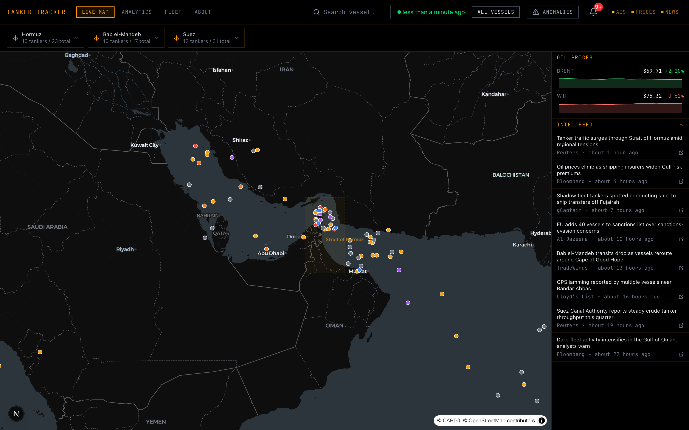
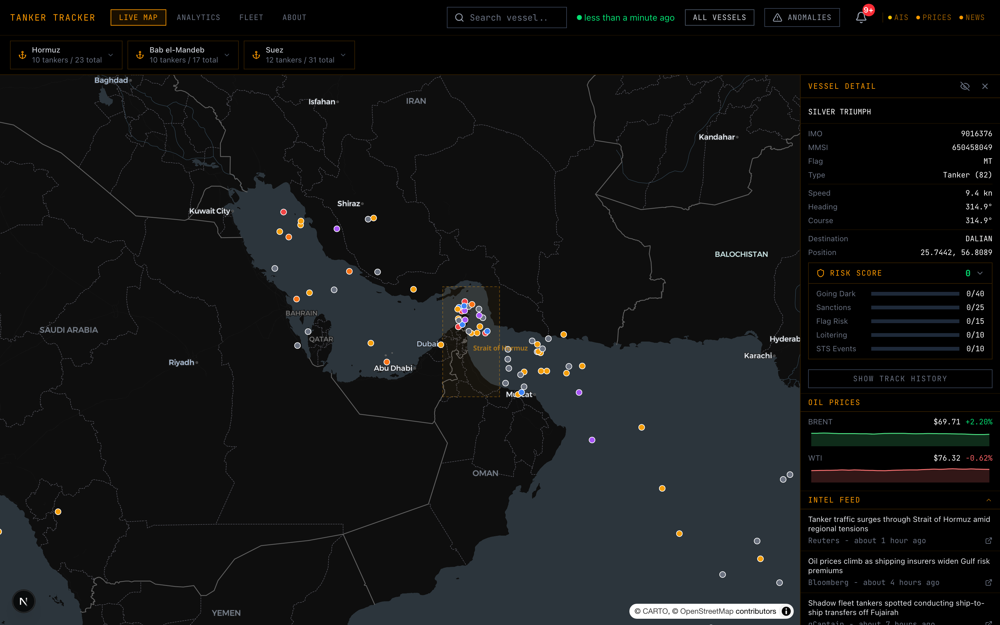

LIVE
All vessels · Middle East
Near real-time AIS

Dark-fleet risk dossier
Identity · sanctions · risk score
Live intelligence picture
0
Vessels Tracked
0
Sanctioned
0
Active Anomalies
Zero
paid API keys.
live AIS · FRED prices · OpenSanctions · keyless map
TANKER TRACKER
THE OIL WAR, IN REAL TIME